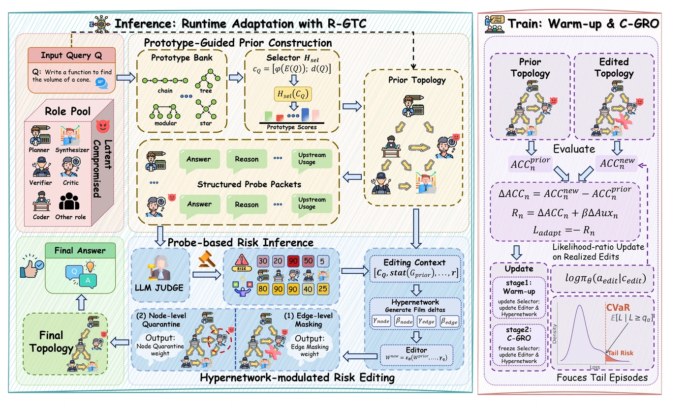
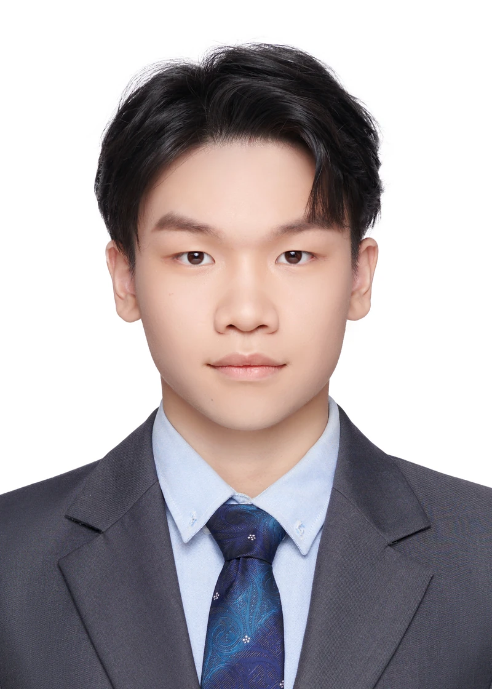

RIGOR: Risk-Gated Topology Adaptation for Robust LLM Multi-Agent Reasoning
* 共同第一作者
RIGOR 通过运行时风险探测与通信拓扑编辑，识别并隔离随查询变化的不可靠智能体；结合 CVaR 尾部风险训练，提升多智能体推理在误导信息攻击下的鲁棒性。在六个基准、两种骨干模型上验证，并在 Qwen3.5-35B-A3B 上相较最强基线取得平均 21.09% 的准确率提升。
网络空间安全 · 硕士研究生
国家网络安全学院, 武汉大学
我目前在武汉大学国家网络安全学院攻读硕士学位，师从陈晶教授。我的研究聚焦大语言模型与智能体安全，关注多智能体协作中的鲁棒推理、模型对齐与奖励机制，以及开放环境下的安全攻防。


* 共同第一作者
RIGOR 通过运行时风险探测与通信拓扑编辑，识别并隔离随查询变化的不可靠智能体；结合 CVaR 尾部风险训练，提升多智能体推理在误导信息攻击下的鲁棒性。在六个基准、两种骨干模型上验证，并在 Qwen3.5-35B-A3B 上相较最强基线取得平均 21.09% 的准确率提升。
研究智能体间的信息交互与风险传播，探索更鲁棒的协作推理与自适应防御。
从攻防双视角理解模型脆弱性，关注奖励黑客、提示注入与奖励机制的可靠性。
结合音频、视觉与时空信息，探索跨模态表征学习及算法在边缘设备上的部署。
智能文化创新赛 · 全国总决赛
人工智能创新赛 · 全国总决赛
软件赛 · Web 应用开发 · 湖北赛区
智能文化创新赛 · 湖北赛区
人工智能创新赛 · 湖北赛区
人工智能编程赛 · 全国选拔赛
中南地区赛
非数学 A 类
华中及西南赛区 · 团队队长
非数学 A 类 · 湖北赛区
2026.09 — 至今在读
武汉大学 · 国家网络安全学院
导师：陈晶教授
2022.09 — 2026.06
武汉大学 · 国家网络安全学院
加权均分 91.62 / 100 · 专业排名 28 / 143